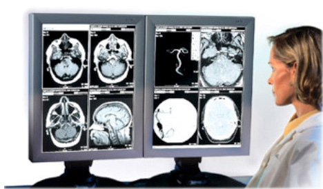

|
This publication contains PM information for the following CT Scanners:
LS Plus, LS Ultra, LS 16, HS QX/i
LS QX/i (1.X)
CT/i
HSA, HSA-RP
HLA
CT9800
For PM information on newer CT scanners (e.g., LS 5.X, LS 7.X), please refer to an appropriate system specific Service Information CD-ROM or HTML publication.
|
 |
© 2007 General Electric Company.